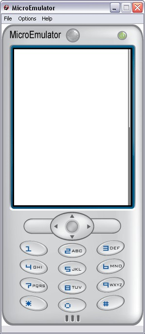

ScrollBar prototype

Introduction
Show a scroll bar to the right of the screen.
Set the bar height (sizeBar), the number of elements (eltTotal) and the shown elements (eltShown).
The cursor size (sizeCursor.y) would be calculate function of the number of elements.
Interface
Fields description
Data fields
- SFFloat eltShown - Number of shown elements
- SFFloat eltTotal - Number of total elements
- SFVec2f size - Size of the area where the ScrollBar proto is displayed
Style fields
- MFString style - Path to the CSS node associated to Scrollbar proto
Warning:
Define style is required (we can use the default style - see
Style node).
Event In
- SFInt32 move - Move scroll bar using an increment: up = -1, down = +1
- SFInt32 moveTo - Move scroll bar to a given element/position (min=0, max=eltTotal)
- SFInt32 update - Update scroll bar y position
CSS
Example